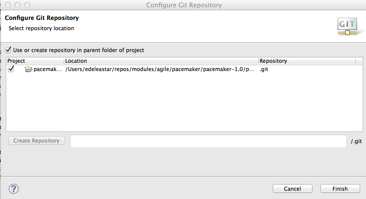
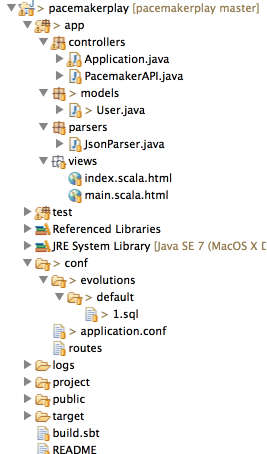
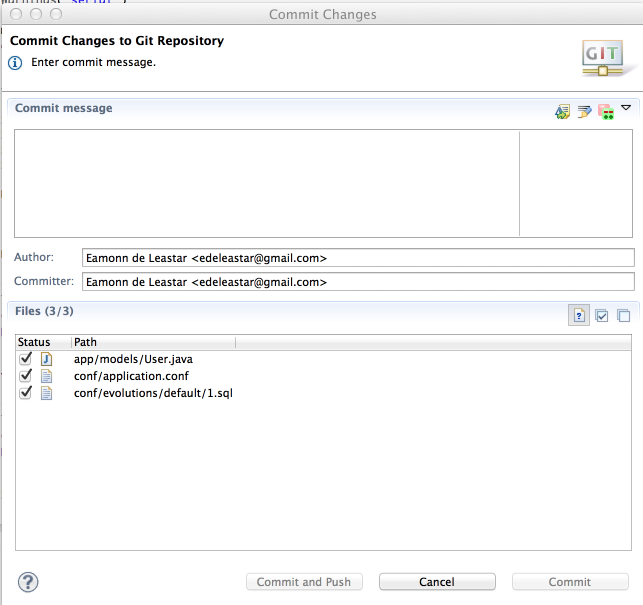

Brief lab to further explore Database evolutions in Play.
From last weeks lab you should have a version of pacemakerplay running locally on your localhost.
The last solution given for the play project is here:
You may also have this running on heroku if you completed the relevant steps from last week. If you did, then you may also have a version of the app that can run locally, but be connected to the remote database.
We have set evolutions to true in our application.conf:
db.default.autoApply=true
db.default.autoApplyDowns=trueThis means that, if we change the our Model, the play framework will realise this as the application starts up, and will do two things:
Here is our current script - in conf/evolutions/default/1.sql
# --- Created by Ebean DDL
# To stop Ebean DDL generation, remove this comment and start using Evolutions
# --- !Ups
create table my_user (
id bigserial not null,
firstname varchar(255),
lastname varchar(255),
email varchar(255),
password varchar(255),
constraint pk_my_user primary key (id)
);
# --- !Downs
drop table if exists my_user cascade;We will make a small change in User to see this process in action. Edit 'User' class to have a new field:
public String nationality;To run the app locally, you need to comment in the local database connection, and comment out the heroku settings:
#remote postgres database on heroku
#default.driver=org.postgresql.Driver
#default.url="jdbc:postgresql://ec2-54-235-208-3.compute-1.amazonaws.com:5432/dbjga15tgnfbef?user=euoojolrsszmcl&password=G66hiSiTNonBJvZpI4ty55fRzA&ssl=true&sslfactory=org.postgresql.ssl.NonValidatingFactory"
#default.url=${DATABASE_URL}
#local h2 database
default.driver = org.h2.Driver
default.url = "jdbc:h2:mem:play"
default.username = sa
default.password = ""Run the app locally - just using the run command within the activator shell - and browse to the app.
Now open 1.sql - and it should have an extra entry in the script:
nationality varchar(255),(You may need to refresh eclipse before opening)
Using Chrome POSTMAN, create a new user and verify that the new field is present.
Recap what we have just done:
All of this have been triggered just be running the app locally.
Exit the activator shell.
In order to deploy our revised application to heroku, we will need to make sure that the generated script is compatible with Postgres, as opposed to the local internal database we are using locally. In addition, we would need to:
Using last weeks lab as a guide, run a version of your app locally that is using the heroku database. This will just adjusting your application.conf to look something like this:
#remote postgres database on heroku
default.driver=org.postgresql.Driver
default.url="jdbc:postgresql://ec2-54-235-208-3.compute-1.amazonaws.com:5432/dbjga15tgnfbef?user=euoojolrsszmcl&password=G66hiSiTNonBJvZpI4ty55fRzA&ssl=true&sslfactory=org.postgresql.ssl.NonValidatingFactory"
#default.url=${DATABASE_URL}
#local h2 database
#default.driver = org.h2.Driver
#default.url = "jdbc:h2:mem:play"
#default.username = sa
#default.password = ""NB: Do not use the connection url above, as this is specific to one database on my account.
Restart the play shell and run the app - and it should start up successfully - and generate the correct evolution script.
To get the app ready for deployment, change the database settings back to this:
#remote postgres database on heroku
default.driver=org.postgresql.Driver
#default.url="jdbc:postgresql://ec2-54-235-208-3.compute-1.amazonaws.com:5432/dbjga15tgnfbef?user=euoojolrsszmcl&password=G66hiSiTNonBJvZpI4ty55fRzA&ssl=true&sslfactory=org.postgresql.ssl.NonValidatingFactory"
default.url=${DATABASE_URL}
#local h2 database
#default.driver = org.h2.Driver
#default.url = "jdbc:h2:mem:play"
#default.username = sa
#default.password = ""We also have live changes to User.java and the sql script.
You can use the heroku toolbelt that you downloaded last week to handle your commit and push to Heroku.
git add .
git commit -m "adding nationality to the user model"Alteratively, you can use eclipse to handle your commit (Git should be built in to your version of eclipse). The instructions for using eclipse are listed below.
First, select your project and select 'Team->Share' form the context menu

The project is already configured and committed to git (we did this in last weeks lab). By pressing 'finish' we are just picking up the git configuration already established.
Our workspace will change to look like this:

There are symbols in front of each icon indicating the status of the file - whether it is committed, changed, deleted etc in git. However, note that the User.java aapplication.comf and 1.sql files have a '>'. This indicates that they has been changed, but not committed. Select your project again and select 'Team->Commit' - you should see this dialog:

Enter a suitable message - and commit the changes. (If you see other files in here - particularly ones beginning in '.target', do not select them for committal).
If you are still running the activator console, exit it, bringing you back to your shell.
Push the new version to heroku:
git push heroku masterUsing Postmaster, test the newly deployed app - verify that there is a new field called nationality in the user object.